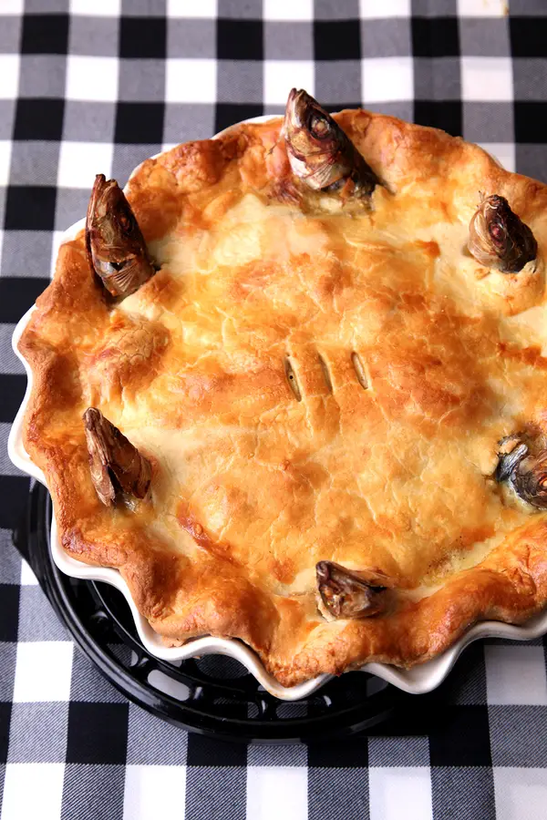

Stargazy Pie

Description
Two of my favorite things, stargazing and sardines!
Look at how cute the heads are popping out of the delicious pie.
Ingredients
For the crust:
- 2 1/4 cups flour, plus more for dusting
- 1 tsp. kosher salt
- 1 tsp. mustard powder, preferably Colman's
- 12 tbsp. unsalted butter, cubed and chilled
- 6 tbsp. ice-cold water
For the filling:
- 6 slices bacon, cut into 1" pieces
- 2 tbsp. unsalted butter
- 1 medium yellow onion, finely chopped
- 1/2 cup chicken stock
- 1/3 cup crème fraîche
- 2 tbsp. English mustard, such as Colman's
- 2 tbsp. finely chopped parsley
- 1 tbsp. fresh lemon juice
- 2 eggs, beaten
- Kosher salt and freshly ground black pepper, to taste
- 8 fresh sardines, cleaned, heads attached
- 3 eggs, hard-boiled, peeled, and sliced
Steps
- Make the crust: Whisk flour, mustard, and salt in a bowl. Using a dough blender, two forks, or your fingers, cut butter into flour mixture, forming pea-size crumbles. Add water; work dough until smooth but with visible flecks of butter. (Alternatively, pulse ingredients in a food processor.) Divide dough in half and flatten into disks. Wrap disks in plastic wrap; chill 1 hour before using.
- Make the filling: Heat bacon in a 4-qt. saucepan over medium-high heat; cook until slightly crisp, 5–7 minutes. Using a slotted spoon, transfer bacon to paper towels to drain. Add butter and onion to pan; cook until golden, 5–7 minutes. Remove from heat; whisk in stock, crème fraîche, mustard, parsley, lemon juice, half the egg, and salt; set aside.
- Assemble and bake the pie: Heat oven to 400°. On a lightly floured surface, roll 1 disk of dough into a 12” round. Fit into a 9” pie plate; trim edges, leaving 1” dough overhanging edge of plate. Arrange sardines in a clocklike pattern with heads resting along edge of crust. Pour filling over sardines; top with reserved bacon, the hard-boiled eggs, salt, and pepper. Roll remaining disk of dough into a 12” round; cut eight 1” slits in dough about 2” from the edge. Place over top of pie and pull sardine heads through slits. Pinch top and bottom edges together and fold under; crimp edges. Brush with remaining egg and cut three 1”-long slits in top of pie; bake until crust is golden and filling is bubbling, 35–40 minutes. Let cool slightly before serving.